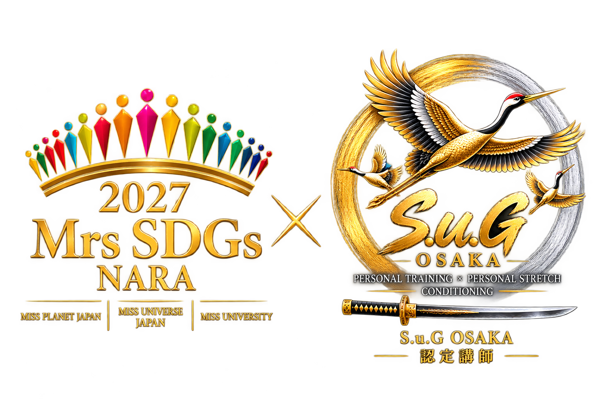

MOVEMENT
動けているかを見る。可動域だけでなく、身体の使い方・コントロール・連動まで確認。

PERSONAL TRAINING × PERSONAL STRETCH × CONDITIONING
鍛えるだけではなく、整える。
身体の状態・動き・記録を見ながら、一人ひとりに合わせて組み立てる。
S.u.Gは、動き・負荷・回復・進捗をひとつにつなぎ、 その日の状態から中長期の変化まで継続して見ていきます。
可動域だけでなく、身体の使い方・コントロール・連動まで確認。
前回の記録と今日の状態を見ながら、刺激・強度・量を調整。
睡眠・活動・疲労など、次のトレーニングにつながる状態を確認。
一回の結果ではなく、前回比較と中長期の変化から次を決める。
トレーニングだけでなく、日常のコンディションも記録。 蓄積した情報を前回と比較し、今日を調整し、次の周期へつなげます。
S.u.Gが提供するのは、一回のセッションだけではありません。 一人ひとりの身体とコンディションを継続して見ながら、 その日の調整から中長期の周期までサポートします。
60分の予約枠だけではなく、その先の継続的な管理まで行うため、 一度に受け入れられる人数には限りがあります。
動く範囲だけではなく、自分でコントロールできるか、 力みや代償なく身体を使えているかを見ながら、 トレーニングにつながる状態へ整えます。
02
PERSONAL STRETCH × CONDITIONING
整える × 鍛える。
ただ伸ばすだけではなく、動きやすい身体へ整えてから鍛える。
可動域や身体の状態を確認し、トレーニングにつなげます。
背中・肩まわりの動きを確認し、上半身を動かしやすい状態へ。
胸郭の動きや姿勢を確認し、上半身の可動性を整える。
股関節や体幹との連動を見ながら、腰へ負担が集中しにくい動きを目指す。
足首まわりの動きを確認し、歩行やトレーニング後のコンディショニングへ。
MEMBER OPTION
会員限定オプショントレーニング前後に追加可能
体重だけではなく、写真・トレーニング記録・身体の状態を継続して比較。 その変化を次の調整につなげます。


03
PERSONAL TRAINING × PERSONAL STRETCH
90分以上のメニューはお問い合わせください。
05
TRAININGから、街へ。
実際の街を歩き、見つけ、集める。 健康・地域・歴史・観光をゲーム体験につなぐS.u.Gの新プロジェクト。


07
PROFILE
PERSONAL TRAINING × PERSONAL STRETCH / CONDITIONING
トレーニング／コンディショニングを担当
ストレッチとトレーニングの両面から、目的・競技・身体の状態に応じたプログラムを提供します。
野球チーム、女子ハンドボールチーム、格闘技などのトレーニング指導経験。

09
LATEST FROM S.u.G
S.u.G OSAKAの最新情報
トレーニング、コンディショニング、S.u.G QUEST、 イベントなどの最新情報をお届けします。
08
ACCESS / CONTACT
S.u.G OSAKA
大阪市北区・天神橋エリア
OFFICIAL LINE
パーソナルトレーニング、ストレッチ、料金、 ご予約については公式LINEよりお問い合わせください。
QRコードを読み取って公式LINEへ
S.u.G OSAKAは、トレーナー1名・1枠1名の完全予約制です。 パーソナルトレーニングは「時間予約型」のサービスであり、 ご予約いただいた時間は、そのお客様のためだけに確保しています。
ご予約後のキャンセルについて、別途キャンセル料はいただきませんが、 ご予約いただいた1回分は消化扱いとなります。
別日・別時間をご希望の場合は、元の予約を移動するのではなく、 その時点で空きがある場合のみ、別枠への再予約が可能です。 ご希望日時への振替を保証するものではありません。
直前・当日の変更が繰り返される場合は、 今後の予約方法を制限する場合があります。 頻繁な日時変更を前提としたご利用には、 当店のサービス形態が合わない場合があります。
通い放題プランは、1か月最大25回／3か月最大75回の範囲内でのご利用となります。